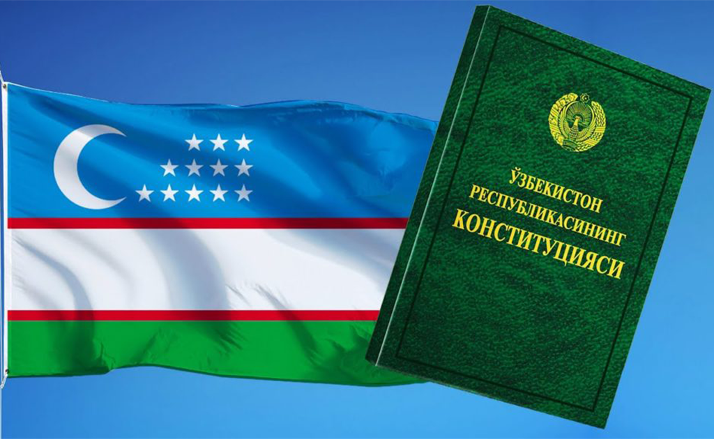

UZBEKISTON BUYUK DAVLAT
7 янв. 2022 г. — O'zbekiston bayrog'i ko'tarildi
chinakam, Ushbu kunni, ayting-chi, qay birimiz
kutmadik. Zarur bo'lgan chog'da goh dor tagida
turib ham, Qay ...
Uzb budjet
Here you can view the budjet of Uzbekistan
The budjet 52.6 trillion UZS
Constitution of Uzbekistan
The Constitution of Uzbekistan nominally creates a separation of powers among a strong presidency, the legislature (the Supreme Assembly of Uzbekistan or Oliy Majlis), and a judiciary. The President of Uzbekistan, who is directly elected to a five-year term that can be renewed once, is the head of state and is granted supreme executive power by the constitution. As commander in chief of the armed forces, the President may declare a state of emergency or of war. The President is empowered to nominate a candidate of the prime minister for consideration of chambers of the Oliy Majlis and appoint full cabinet of ministers and the judges of the three national courts, subject to the approval of the Oliy Majlis, and to appoint all members of lower courts. The President also has the power to dissolve the parliament, in effect negating the Oliy Majlis's veto power over presidential nominations in a power struggle situation.[1]
